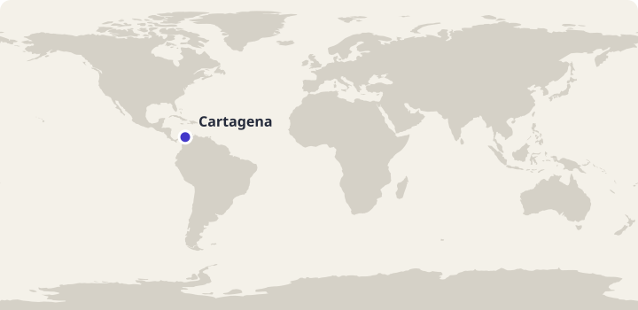
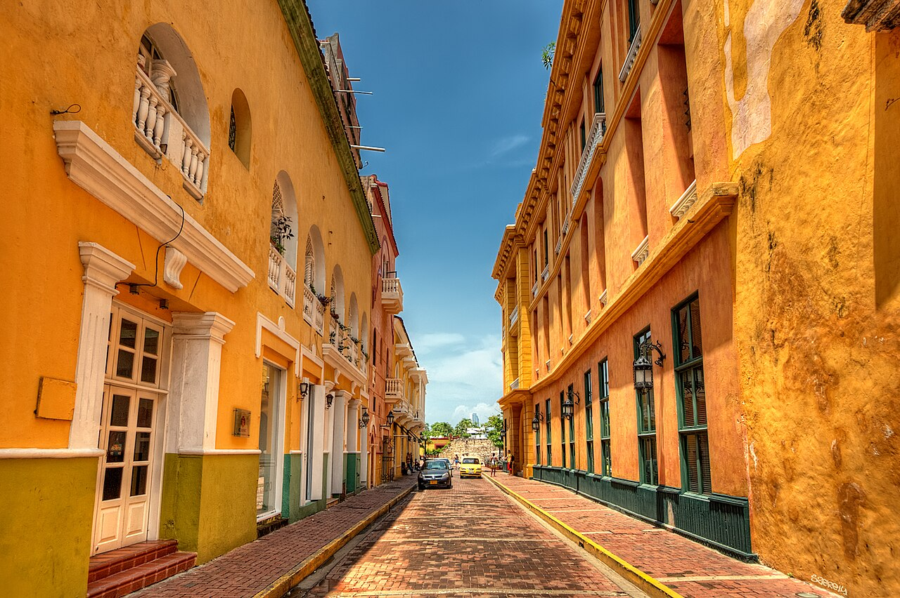
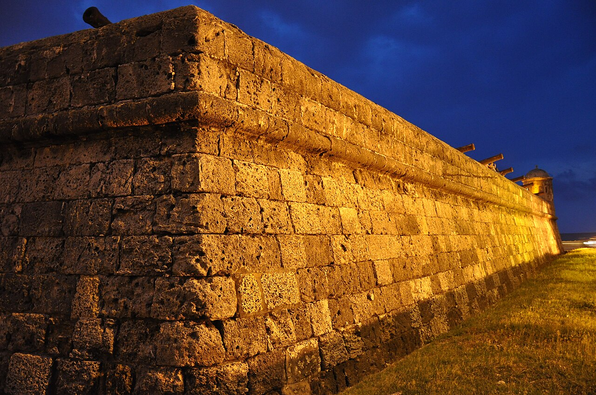

Arbeidsutkast · til lærervurdering
45 minutter · les, oversett og sammenlign
Colombia: Un día en Cartagena
En søndag med Diego: havet, nærmiljøet og et måltid sammen.
Bli med Diego gjennom en dag i Cartagena. Les høyt og oversett muntlig i par. Svar på spørsmålene, snakk om hverdagslivet og øv på ordene fra teksten. Diego og familien er fiktive; stedene og kulturinnslagene bygger på kildene nedenfor.

Cartagena i Colombia. Kartgrunnlag: Natural Earth. Markøren viser byens omtrentlige plassering.
Les og oversett i par
- Les teksten høyt sammen. Bytt på å lese ett avsnitt hver.
- Oversett ett avsnitt om gangen muntlig til norsk. Pek eller trykk på understrekede ord når dere trenger hjelp.
- Hjelp hverandre med ord og setninger dere er usikre på.
Pek eller trykk på understrekede ord i teksten for å se norsk oversettelse. Numrene i bildene viser bildeord.
Sør-Amerika · Karibia
Un día en Cartagena

Bildet kunne ikke lastes. Du kan fortsatt lese teksten og bruke ordoppslagene.
Om bildet
Cartagena, Colombia (5003058315).jpgDato: 2010Nedskalert av Commons; ikke beskåret. Nummererte ordpunkter lagt over bildet.
- la calle gaten
- la puerta døren
- el balcón balkongen
Diego, y en Cartagena, en de Colombia. Desde algunas calles de mi ciudad . También hay y con . . y yo porque en .
dos y unos . Yo que podemos . organiza la actividad con un profesor. En la playa botellas de plástico y . . El profesor que a los animales y .

Om bildet
Cartagena's fortresses built by the Spanish to defend it - Engineering works took well over 208 years and ended with some eleven kilometres of walls surrounding the city (4625638605).jpgDato: 2009Nedskalert av Commons; ikke beskåret.
Trabajamos . Otros ayudan y hablamos caminamos. , miramos el lugar: ahora hay . Me gusta ver el resultado de un trabajo que hacemos . volver . , bebemos agua y un momento .
. Mi madre con , una combinación que de Cartagena. un poco más de arroz y yo quiero fruta . Comemos en con plantas. a nuestra madre lo que hacemos en la playa y los para otra ocasión.
paseo con un amigo por el centro histórico. Vemos las y calles con . En una plaza y observamos a la gente que pasa. Algunos visitantes hacen fotos, pero para muchas personas estas calles también son parte de su . Compramos y .
a casa, escribo a un compañero: « puedes venir con nosotros». preparo la mochila para . Todavía tengo tiempo para hablar con . y hacemos algo para . , pero con .
Faktakilder: Colombia Travel: Qué comer en Cartagena · Colombia Travel: Centro histórico de Cartagena. Vis til teksten når du begrunner svarene.
Spørsmål til teksten
Velg ett svar på hvert spørsmål.
Utforsk kultur
Sammenlign og spør
- På hvilke måter ligner Diegos søndag på en dag på et sted du kjenner?
- Hvordan bruker Diego både havet og bysentrum i løpet av dagen?
- Hvilke små handlinger i teksten hjelper til med å ta vare på nærmiljøet?
- Hva ville du spurt Diego om hverdagen i Cartagena?
Åpne spørsmål har flere rimelige svar. Lytt til partnerens begrunnelse.
Bruk språket i par
Dere vil gjøre noe hyggelig og noe nyttig i nærmiljøet. Lag en plan med tre spanske setninger og presenter den for partneren.
Prøv en utvidelse
Gi et kort råd til en som skal besøke Cartagena.
Ord du kan bruke videre
Øv på de ti ordene fra teksten. Prøv å huske svaret før du snur kortet.
Lær Colombia-gloseneValgfritt glosesett: Colombia: Un día en Cartagena. Kom tilbake og repeter ordene. I glosemodus vises det når ordene er klare for repetisjon.
Se de ti ordene
| Spansk | Norsk |
|---|---|
| la playa | strand |
| el mar | hav |
| los guantes | hansker |
| la bolsa | pose |
| la basura | søppel |
| recoger | å plukke opp |
| la botella | flaske |
| el pescado | fisk |
| el arroz | ris |
| cuidar | å ta vare på |
Dekk den spanske kolonnen. Si ordet før du sjekker. Bytt deretter retning og øv på ordene du er usikker på.
| Spansk | Norsk |
|---|---|
| la playa | strand |
| el mar | hav |
| los guantes | hansker |
| la bolsa | pose |
| la basura | søppel |
| recoger | å plukke opp |
| la botella | flaske |
| el pescado | fisk |
| el arroz | ris |
| cuidar | å ta vare på |